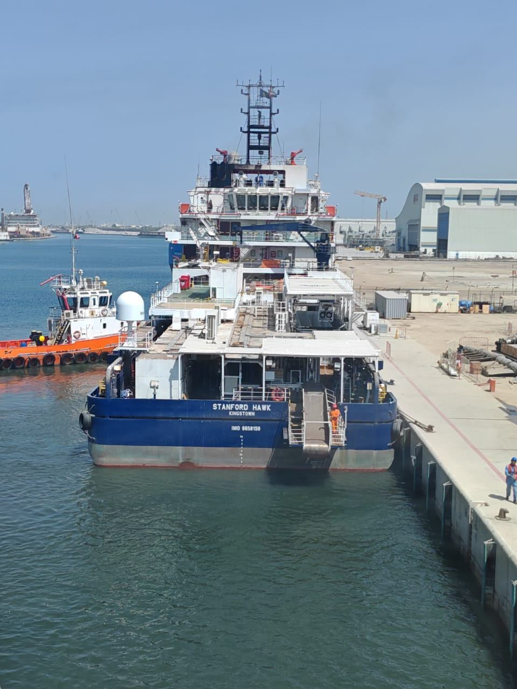
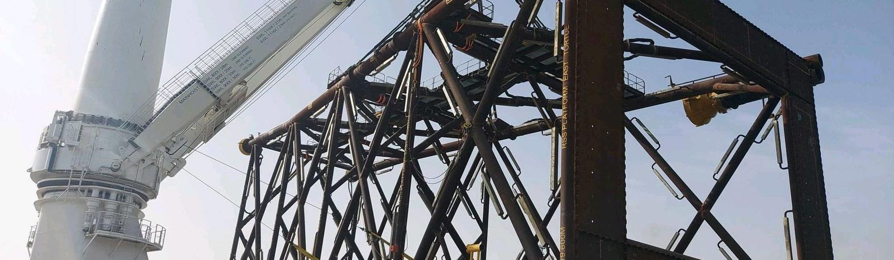
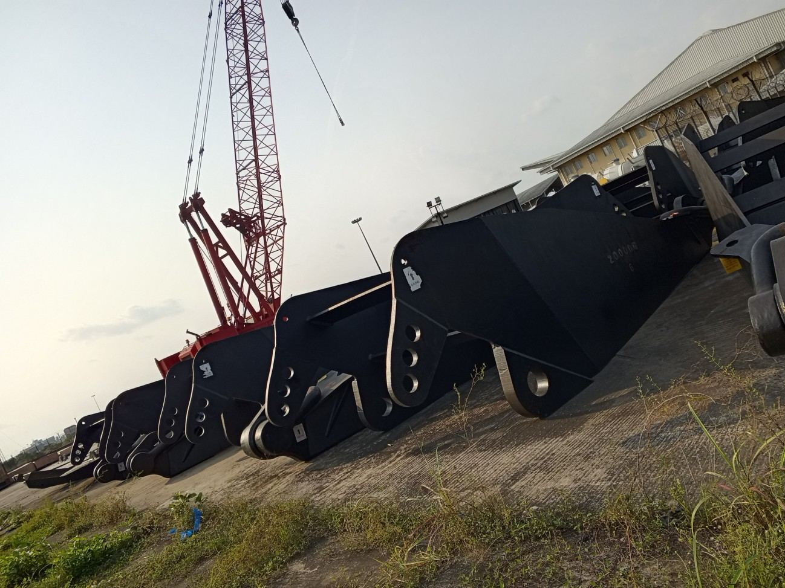

01 / Marine Services

Marine capability.
Operational focus.
Vessel chartering, ship management, offshore logistics and port cargo support, shaped around the operation.
Explore Marine Services →
Marine & energy / West Africa
We connect marine operations, technical insight and commercial judgement to help clients define, source and deliver the capability their projects need.
One business. Connected expertise.
Sundance Technologies West Africa Limited combines hands-on marine experience with advisory shaped around each client’s mandate.
01 / Marine Services

Vessel chartering, ship management, offshore logistics and port cargo support, shaped around the operation.
Explore Marine Services →02 / Energy Advisory

Technical, commercial and regulatory advisory for operators, contractors, investors and equipment providers.
Explore Energy Advisory →03 / Energy Infrastructure

Project advisory for shallow-water oil-and-gas field development, connecting engineering, fabrication, drilling and marine interfaces.
Explore Energy Infrastructure →The Sundance Project Evaluator
Define the scope. Compare vessel, equipment and delivery packages. See where technical requirements, evidence and commercial assumptions need attention.
From port cargo to subsea operations, use a structured first assessment to make the next conversation more useful.
ILLUSTRATIVE PACKAGE COMPARISON
Our approach
Establish the objective, operating environment and decisions that matter.
Review capability, evidence, commercial basis and project constraints.
Align the right providers and clarify package responsibilities.
Track readiness, resolve interfaces and support the next decision.
Selected experience

Cargo superintendency, vessel assurance and marine logistics across port and offshore interfaces.
Explore Marine Services experience →
Business cases, partner selection and technical advisory for marine and energy development scopes.
Explore Energy Advisory experience →Tell us the scope, the constraints and the decision you need to make.